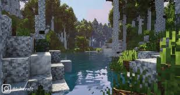
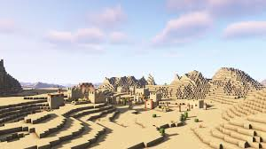
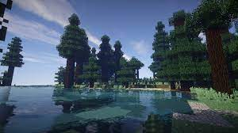
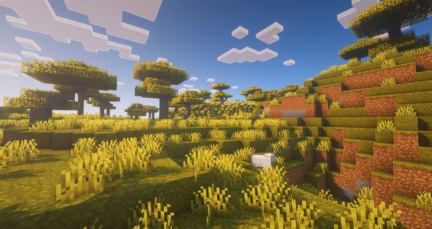
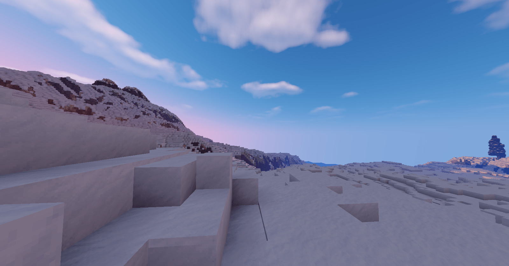
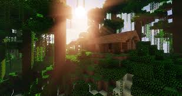
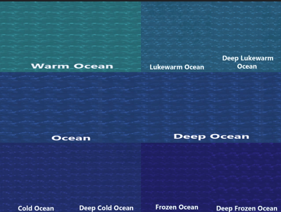
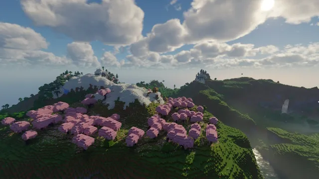
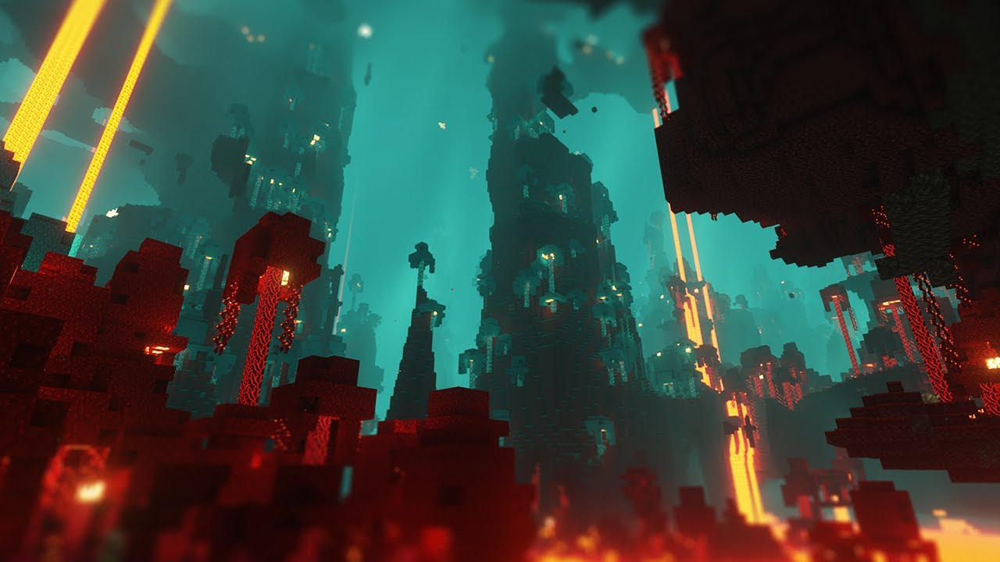
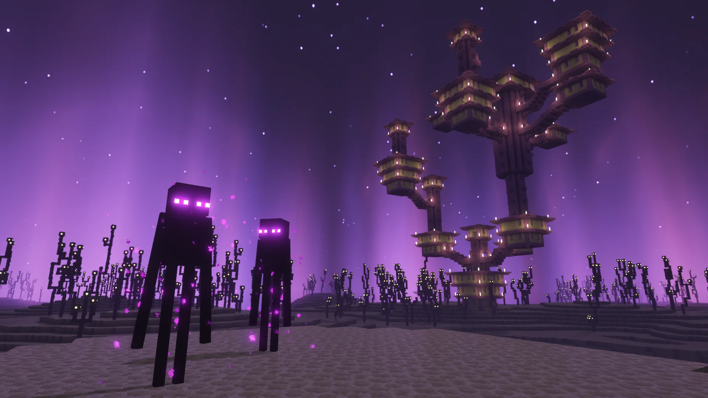

Biomes

Forêt : Remplie d’arbres, principalement des chênes et des bouleaux. On y trouve des animaux comme les cochons, les vaches et les moutons. C’est un bon point de départ pour les débutants.

Désert : Peu de végétation, principalement du sable et des cactus. Les temples du désert et les villages peuvent apparaître ici. Les zombies, les squelettes et les husks (zombies spéciaux) y apparaissent souvent.

Taïga : Ce biome de forêt froide est peuplé d’épicéas et d’animaux comme les loups. On y trouve également de la neige et parfois des igloos.

Savane : Avec ses arbres d’acacia, ce biome est souvent plus sec et abrite des animaux comme les chevaux et les lamas. Les villages y apparaissent fréquemment.

Toundra Neigeuse : Remplie de neige et de glace, avec des ours polaires et des lapins des neiges. Peu de ressources végétales ici, mais c'est une excellente zone pour les chasseurs de glace.

Jungle : Un biome dense avec de grands arbres, du bambou, et des temples de la jungle. On peut y trouver des perroquets, des pandas et des ocelots.

Océan : Avec des eaux profondes, on y rencontre des poissons, des dauphins et parfois des ruines sous-marines. Ce biome est riche en ressources comme le corail, le varech et les trésors.
Dimensions

Overworld: La dimension de base où l'on commence. Elle contient la majorité des biomes et ressources, ainsi que de nombreux animaux et mobs.

Nether : Accessible par un portail construit avec de l’obsidienne, le Nether est un endroit dangereux rempli de lave, de forteresses et de créatures hostiles comme les piglins et les ghasts. Les ressources rares comme le quartz du Nether et les potions sont disponibles ici.

End : La dimension finale, accessible par un portail de l’End dans un stronghold. Elle abrite l'Ender Dragon, le boss principal du jeu. Après sa défaite, les joueurs peuvent explorer des îles de l’End avec des créatures comme les shulkers et trouver des Elytras dans les bateaux de l’End.